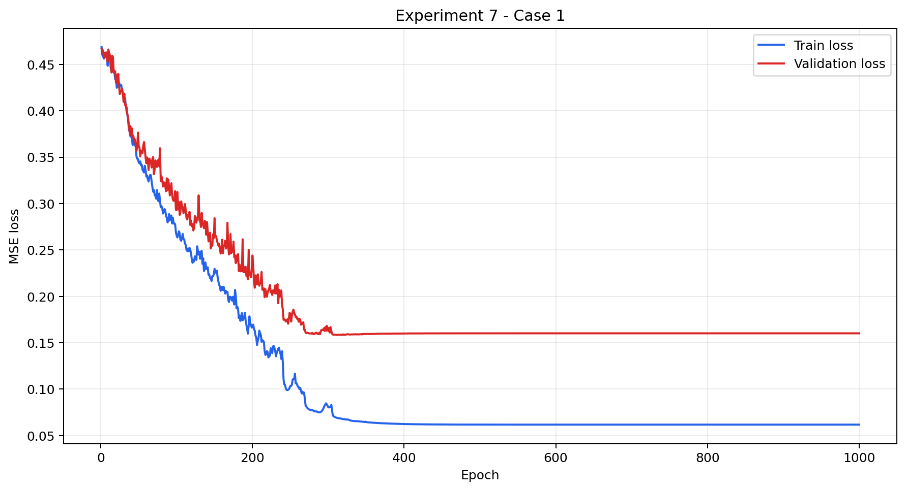
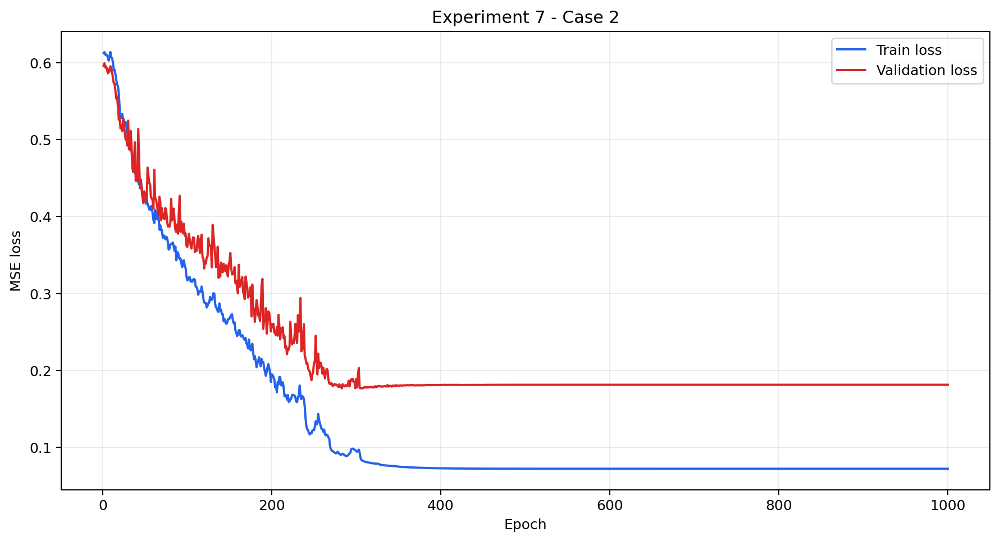
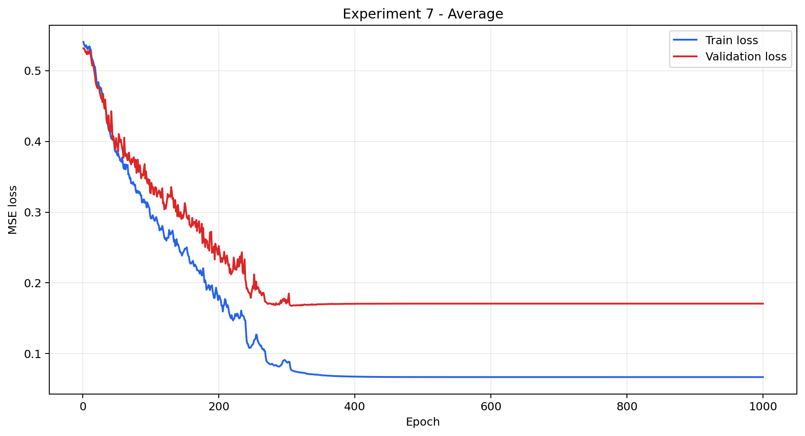
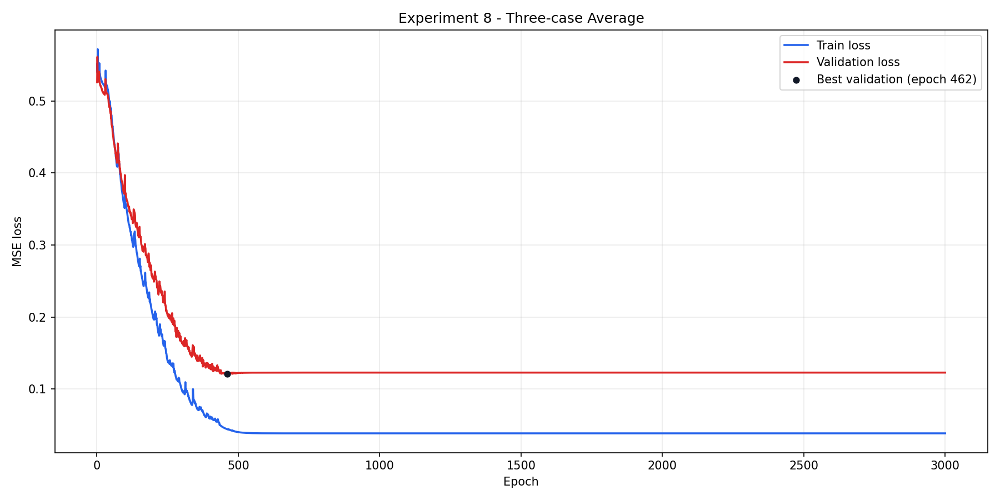
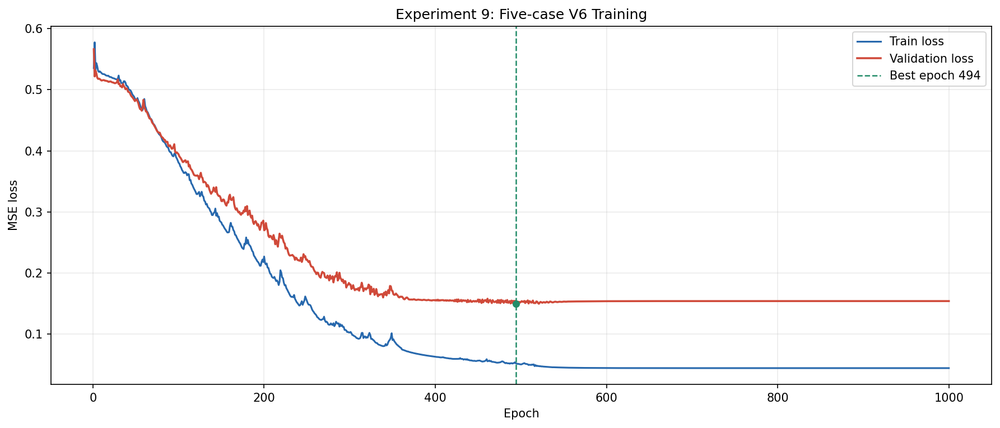
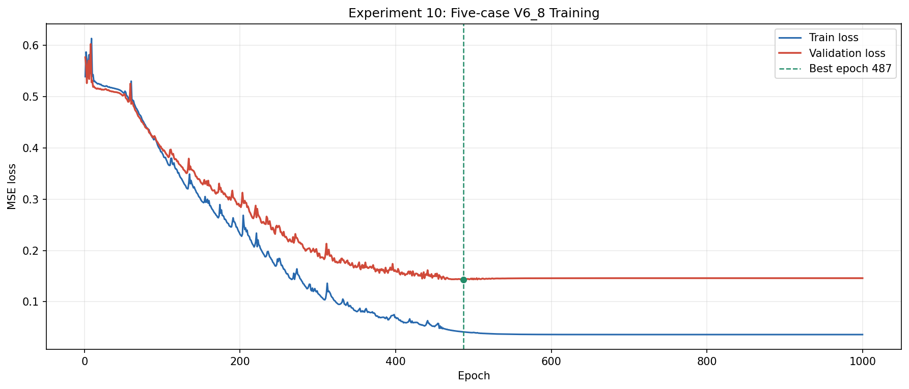
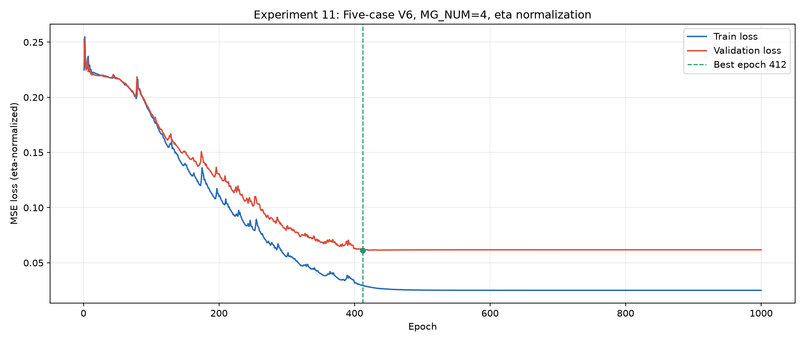
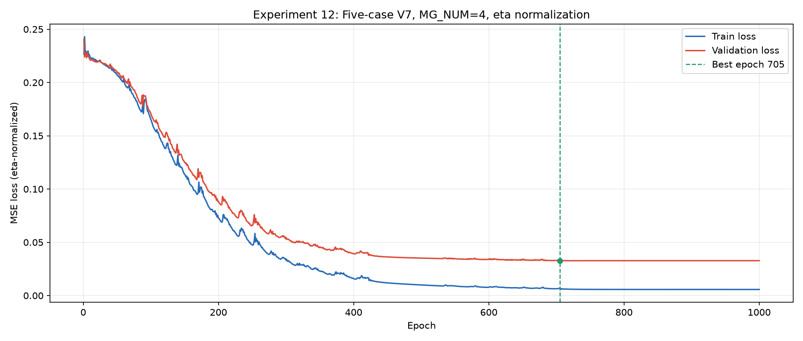

训练记录
脚本区别
| 脚本 | LocalExchange / DownBlock | BiasTransformerBlock | MGTransformer 多次调用 | MG 后 LocalExchange 多次调用 | 当前默认 MG_num | checkpoint | 注释 |
|---|---|---|---|---|---|---|---|
train.py |
Post-Norm | Pre-Norm | 共享参数 | 共享参数 | 2 | case1_1ghz_best.pt |
基础版本，作为后续结构实验的对照。 |
trainV2.py |
Pre-Norm | Pre-Norm | 共享参数 | 共享参数 | 2 | case1_1ghz_bestV2.pt |
将主要残差块改为 Pre-Norm，用于验证 Pre-Norm 对深层训练和梯度传播的作用。 |
trainV3.py |
Post-Norm | Pre-Norm | 每次独立参数 | 每次独立参数 | 2 | case1_1ghz_bestV3.pt |
保留 Post-Norm，但让多层 MGTransformer 使用独立参数，用于验证参数不共享的作用。 |
trainV4.py |
Pre-Norm | Pre-Norm | 每次独立参数 | 每次独立参数 | 3 | case1_1ghz_bestV4.pt |
同时采用 Pre-Norm 和独立参数。 |
trainV5.py |
Pre-Norm | Pre-Norm | 共享参数 | 共享参数 | 2 | case1_1ghz_bestV5.pt |
由 V2 扩展，网络不变；依次训练 case1、case2，以平均验证loss选择best。 |
trainV6.py |
Pre-Norm | Pre-Norm | 共享参数 | 共享参数 | 2 | case1_1ghz_bestV6.pt |
网络沿用V2；每个epoch对全部case样本累计梯度，再统一执行一次optimizer step，以各case平均验证loss选择best。 |
trainV7.py |
Pre-Norm | Pre-Norm | 共享参数 | 共享参数 | 4 | case1_1ghz_bestV7_4_eta.pt |
沿用V6主干与训练方式；新增14维入射源支路和10维G0几何节点MLP，两者均输出乘性与加性调制，在入口注入主干；几何缓存复用一次前向内的固定几何量与Green核计算。 |
训练结果
二个 Case 训练
| 序号 | 脚本 | MG_num | Round | Epoch | 统一lr | train loss (case1) | 验证loss (case1) | train loss (case2) | 验证loss (case2) |
|---|---|---|---|---|---|---|---|---|---|
| PO baseline | 0.4651140 | 0.4716737 | 0.6114222 | 0.5977157 | |||||
| 1 | train.py |
1 | 50 | 100 | True | 0.34 | 0.43 | ||
| 2 | trainV2.py |
2 | 20 | 100 | True | 0.2556597 | 0.3124883 | 0.2644765 | 0.3346760 |
| 3 | trainV3.py |
2 | 20 | 100 | True | 0.3473585 | 0.3977745 | 0.2788116 | 0.3514389 |
| 4 | train.py |
1 | 50 | 100 | True | 0.3161856 | 0.3687931 | 0.4054257 | 0.4521745 |
| 5 | trainV2.py |
3 | 50 | 100 | True | 0.1185857 | 0.2083498 | 0.1794636 | 0.2775576 |
| 6 | trainV4.py |
3 | 6 | 100 | True | 0.1014225 | 0.1943720 | 0.1743607 | 0.2596381 |
| 7 | trainV5.py |
4 | 2 | 1000 | True | 0.06171694 | 0.1601393 | 0.07219689 | 0.1813488 |
三个 Case 训练
| 序号 | 脚本 | MG_num | Epoch | 最佳Epoch | train loss (case1) | 验证loss (case1) | train loss (case2) | 验证loss (case2) | train loss (case3) | 验证loss (case3) | 平均train loss | 平均验证loss |
|---|---|---|---|---|---|---|---|---|---|---|---|---|
| PO baseline | 0.4651140 | 0.4716737 | 0.6114222 | 0.5977157 | 0.5367418 | 0.5056661 | 0.5377593 | 0.5250185 | ||||
| 8 | trainV6.py |
4 | 3000 | 462 | 0.04296171 | 0.1226621 | 0.05313023 | 0.1357329 | 0.03616315 | 0.1053813 | 0.04408503 | 0.1212588 |
五个 Case 训练
| 序号 | 脚本 | MG_num | Epoch | 最佳Epoch | case1 train/val | case2 train/val | case3 train/val | case4 train/val | case5 train/val | 平均train/val |
|---|---|---|---|---|---|---|---|---|---|---|
| PO baseline | 0.4651140 / 0.4716737 | 0.6114222 / 0.5977158 | 0.5367418 / 0.5056661 | 0.6407698 / 0.6255563 | 0.3923243 / 0.3864167 | 0.5292744 / 0.5174057 | ||||
| 9 | trainV6.py |
4 | 1000 | 494 | 0.04624768 / 0.1362400 | 0.05960255 / 0.1733138 | 0.03895196 / 0.1031478 | 0.06664200 / 0.1973725 | 0.04865366 / 0.1385167 | 0.05201957 / 0.1497182 |
| 10 | trainV6.py (V6_8) |
8 | 1000 | 487 | 0.03587838 / 0.1321653 | 0.04743682 / 0.1579915 | 0.02917274 / 0.1024080 | 0.05391008 / 0.1962207 | 0.03893700 / 0.1281163 | 0.04106700 / 0.1433804 |
五个 Case 训练（eta 固定归一化）
序号11沿用 V6 网络和训练方式，工作站设置 MG_num=4，未加入 V7 的入射源支路或几何编码支路。
序号12使用 V7，MG_num=4；在相同 eta 数据集上增加入射源与几何支路。入射源输入为传播方向3维、方向与法向外积9维、相位的cos/sin共2维；几何输入为中心3维、法向3维、面积1维，以及G0邻域、所属G1/G2邻域的法向变化各1维。两条MLP各输出512维，拆为两组256维，按 h = h + h * gamma + beta 依次注入G0，不在每轮MG中重复注入。
数据集由 dataset_case1to5_1ghz.pt 改为 dataset_case1to5_1ghz_eta.pt：原来使用每个样本的 PO 平均幅值作为 scale，电流输入为 J_PO / scale，标签为 (J_MoM - J_PO) / scale；现在统一使用 eta0=376.730313668，电流输入为 eta0 * J_PO，标签为 eta0 * (J_MoM - J_PO)，保存的物理恢复系数 scale=1/eta0=0.002654418727985。
5个 case 共90个样本的几何、聚类、几何边、耦合边、频率和角度均保持不变。每个 case 使用15个训练角度，验证角度为 phi=50/110/170 deg。由于归一化不同，本节 MSE 不应与序号9、10的 MSE 直接比较。
下表各 case 和平均值均使用各自最佳 checkpoint、MG_num=4 在本地重新评估，PO baseline 也按 eta 数据集重算。序号11取第412轮，序号12取第705轮。Checkpoint 保存的是当轮参数更新前累计的 train loss，而下表为更新参数后固定最佳模型的复算值：序号11的日志/复算平均 train loss 为 0.02944848 / 0.02929179，序号12为 0.00669073 / 0.00605494。复算平均验证 loss 与各自 checkpoint 一致。
| 序号 | 脚本 | MG_num | Epoch | 最佳Epoch | case1 train/val | case2 train/val | case3 train/val | case4 train/val | case5 train/val | 平均train/val |
|---|---|---|---|---|---|---|---|---|---|---|
| PO baseline（eta） | 0.21504844 / 0.21760768 | 0.25583449 / 0.25575049 | 0.25064789 / 0.24167807 | 0.21447395 / 0.21316708 | 0.17532636 / 0.17410488 | 0.22226623 / 0.22046164 | ||||
| 11 | trainV6.py (V6_4_eta) |
4 | 1000 | 412 | 0.02903799 / 0.06075905 | 0.03309569 / 0.06604467 | 0.02512861 / 0.05116812 | 0.03215844 / 0.07281842 | 0.02703823 / 0.05606414 | 0.02929179 / 0.06137088 |
| 12 | trainV7.py (V7_4_eta) |
4 | 1000 | 705 | 0.00545363 / 0.02793141 | 0.00705845 / 0.03033356 | 0.00469026 / 0.02227455 | 0.00724584 / 0.04956882 | 0.00582652 / 0.03307219 | 0.00605494 / 0.03263611 |
序号11参数文件：checkpoints/case1_1ghz_bestV6_4_eta.pt；曲线数据：checkpoints/loss_historyV6_4_eta.npy。序号12参数文件：checkpoints/case1_1ghz_bestV7_4_eta.pt；曲线数据：checkpoints/loss_historyV7_4_eta.npy。两份曲线均包含1000轮平均 train/val loss；序号12的 checkpoint 平均验证 loss 为 0.03263610，与本地复算值仅有约 1.7e-9 的浮点差异。
序号9、11、12的统一电流相对误差
统一使用 error = ||J_pred - J_MoM||_F / ||J_MoM||_F * 100%，包含所有面元、xyz三个方向的实部和虚部，不做面积加权，与电流可视化的相对误差定义一致。物理电流按各数据集的 scale 恢复：J_pred = (X[:, 7:13] + delta) * scale，J_MoM = (X[:, 7:13] + Y) * scale；同一样本的公共缩放系数在比值中抵消，因此两种归一化可以直接比较。
序号9使用第494轮最佳参数和原数据集，序号11使用第412轮最佳参数和 eta 数据集，序号12使用第705轮最佳参数和同一 eta 数据集，三者均为 MG_num=4。每个样本先计算相对误差，再分别对每个 case 的15个训练角度和3个验证角度取平均，最后对5个 case 等权平均；不是把所有样本的面元拼接后计算一个范数。序号9、11沿用已完成的复算结果，序号12按相同口径补算。下表单位均为百分比，越低越好。
| 序号 / 基准 | case1 train/val | case2 train/val | case3 train/val | case4 train/val | case5 train/val | average train/val |
|---|---|---|---|---|---|---|
| PO base error | 74.77 / 75.11 | 78.89 / 78.93 | 78.09 / 77.40 | 78.15 / 78.06 | 71.36 / 71.28 | 76.25 / 76.16 |
| 9 | 23.73 / 38.76 | 24.98 / 41.76 | 21.07 / 34.43 | 25.31 / 42.95 | 25.32 / 41.80 | 24.08 / 39.94 |
| 11 | 27.59 / 39.08 | 28.78 / 40.55 | 24.86 / 35.64 | 30.25 / 45.37 | 28.62 / 41.23 | 28.02 / 40.38 |
| 12 | 11.94 / 25.50 | 13.23 / 27.48 | 10.74 / 23.23 | 14.37 / 37.18 | 13.26 / 31.60 | 12.71 / 29.00 |
本次运行中，序号11的平均验证相对误差比序号9高约0.44个百分点，训练相对误差高约3.94个百分点。Case2、case5验证误差降低，其余三个case升高；eta 归一化后的 MSE 数值更低，不等于物理电流相对误差更低。
序号12的五个case训练与验证相对误差均低于序号9、11。平均验证误差降为29.00%，比序号9低10.94个百分点（相对降低27.39%），比序号11低11.38个百分点（相对降低28.17%）。这是V7整体方案的改善，尚不能将收益单独归因于入射源支路或几何支路。
消融实验
序号13、14使用 ablation_study.py，均加载序号12的 case1_1ghz_bestV7_4_eta.pt，MG_num=4，使用同一 eta 数据集和相同的 train/val 角度划分。只关闭指定支路后前向评测一遍，没有重新训练、微调或更新参数。表内使用与前文相同的复电流相对L2 error，单位为百分比，按 train / val 展示，越低越好。每个角度先计算error，再分别对各case的训练/验证角度取平均，最后对5个case等权平均。
| 序号 / 基准 | illustration | case1 train/val | case2 train/val | case3 train/val | case4 train/val | case5 train/val | average train/val |
|---|---|---|---|---|---|---|---|
| PO base error | - | 74.77 / 75.11 | 78.89 / 78.93 | 78.09 / 77.40 | 78.15 / 78.06 | 71.36 / 71.28 | 76.25 / 76.16 |
| 12 | 未关闭 | 11.94 / 25.50 | 13.23 / 27.48 | 10.74 / 23.23 | 14.37 / 37.18 | 13.26 / 31.60 | 12.71 / 29.00 |
| 13 | 关闭 geo 支路 | 72.63 / 73.12 | 75.15 / 74.95 | 71.79 / 71.72 | 86.79 / 87.69 | 73.95 / 72.94 | 76.06 / 76.08 |
| 14 | 关闭 src 支路 | 61.58 / 63.71 | 61.75 / 62.71 | 60.30 / 64.13 | 69.06 / 68.92 | 58.50 / 59.19 | 62.24 / 63.73 |
| 15 | 关闭 G1/G2 的 BiasTransformerBlock | 77.00 / 78.54 | 82.14 / 83.41 | 79.53 / 79.29 | 78.62 / 81.88 | 79.04 / 79.34 | 79.27 / 80.49 |
| 16 | 关闭 G1/G2 的 CoupleExchange | 63.17 / 64.30 | 76.82 / 77.33 | 66.92 / 66.52 | 75.42 / 76.93 | 63.85 / 64.62 | 69.23 / 69.94 |
结果文件：序号13为 checkpoints/ablation_study/source1_geo0_MG4_eta_error.json，序号14为 checkpoints/ablation_study/source0_geo1_MG4_eta_error.json。这两组反映已训练V7对支路的依赖，不等同于关闭支路后重新训练的结果。
序号15、16沿用序号12的 checkpoint、eta 数据集、MG_num=4 和相同误差口径；source 与 geo 支路均开启，只在每次 MGTransformer 调用中分别关闭 G1/G2 的一条交流支路，不重新训练。两条支路都从各层原始输入计算，关闭 BiasTransformerBlock 时保留原始特征及 CoupleExchange。结果文件分别为 checkpoints/ablation_study/bias0_cplx1_MG4_eta_error.json 和 checkpoints/ablation_study/bias1_cplx0_MG4_eta_error.json。相对序号12的平均验证误差 29.00%，两组分别升至 80.49% 和 69.94%；这只能说明已训练的 V7 权重对两条支路都敏感。关闭任一支路后若重新初始化或微调，其误差能否重新降低、降低到什么程度，尚未测试，不能根据本表断言该支路在可重新训练的网络中不可缺少。
Loss 曲线
序号7



序号8

序号9

序号10

序号11

序号12
